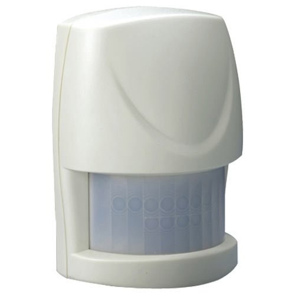

Everspring Compact Z-Wave Motion Sensor (HSP02)¶

Basic operation¶
The HSP02 is designed to control Z-Wave devices based on motion and light level. Example: Use to turn on lights when a dark room is entered. The unit can also report motion sensed to HomeSeer and other control systems.
How to add to VENUS app¶
- 1. Activation
- Press “Add button” (button ‘+’) in app
- Remove thin pull tab plastic
- Wait for VENUS scan & detect this device and inform in app
- 2. Reset then re-add
- Press “Add button” (button ‘+’) in app
- Pressing link key 3 times within 1.5 second
- Wait for VENUS scan & detect this device and inform in app
How to add/remove associated device(s) to¶
To add associated device(s) to this sensor, below action is required:
- Add z-wave notified-devices (which will be associated to this sensor) to VENUS
- Select Associate button and then select notified-device(s) to add
- Pressing link key 3 times within 1.5 second
- If successful, pop-up notification displays in VENUS app
To remove associated device(s) from this sensor, below action is required:
- Select Associate button and then select notified-device(s) to remove
- Pressing link key 3 times within 1.5 second
- If successful, pop-up notification displays in VENUS app
Configuration description¶
Trigger value to associated devices
Available
- 1 - 99: ON (Binary switch devices)
- Dim value (Multi-level devices)
Default 99 Enable/Disable Sensor Detecting Function
Available 0: Disable trigger to both controller and associated devices 1: Enable trigger to both controller and associated devices 2: Enable trigger to controller and disable to associated devices 3: Disable trigger to controller and enable to associated devices Default 1 Set sensity level
Available 1 - 10 (sensity level) Default 6 Re-trigger Interval Setting (PIR sensor only)
Available 5 ~ 3600 (trigger interval) Default 180
- Lux level setting
Lux level which determines when the light sensor will be activated.
Available 1 ~ 100 (trigger interval) Default 10
- On/Off duration
The duration determines how long the module/lighting should stay ON. For instance, Lamp Module turns off 100 secs after it has been turned on.
Available 5 ~ 3600 (in seconds) Default 15